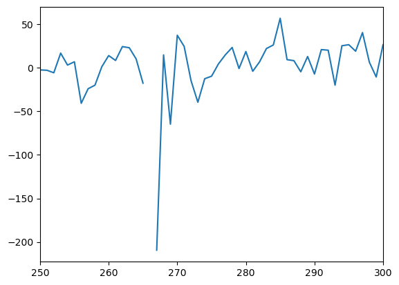

Preprocessing Trimming
[3]:
# Import libraries
import os, glob, io, pickle,random
import numpy as np
import pandas as pd
import matplotlib.pyplot as plt
from tqdm import tqdm
Functionals specific to current notebook
[1]:
### Functions to load and dump existing structure from/to files
### Source: MIPLab
def load_file(current_path,filename):
"""
desc: load file by pickling
"""
print("Loading the file: ",filename)
with open(current_path+filename,'rb') as pickle_file:
cfile=pickle.load(pickle_file)
return(cfile)
def dump_file(current_path,filename,data_structure):
"""
desc: save file by dumping in pkl format or returning if unsaved/unsave-able
"""
if os.path.isfile(current_path+filename) and os.access(current_path, os.R_OK):
# checks if file exists
print ("File exists and is readable")
current_file=load_file(current_path,filename)
return(current_file)
else:
if data_structure == [] or data_structure == {}:
return data_structure
else:
print ("Either file is missing or is not readable, creating file...")
with open(current_path+filename, 'wb') as outfile:
pickle.dump(data_structure, outfile)
return(1)
Description
We preprocess timeseries by removing frames that have too large frame displacement values.
GOAL: Generate timeseries preprocessed
Table of Contents
### Preprocessing by frame displacement
[5]:
# Loading the length of each movie in a dictionary
filepath_films='./data/emoFiles/emo/*csv'
films_data_length={}
for index, film_label in enumerate(glob.glob(filepath_films)):
if 'All_Annotations' not in film_label and 'labels' not in film_label \
and 'AnnotationWeights' not in film_label and 'WeightedAnnotations' not in film_label:
filmID=film_label.strip().split('/')[-1].split('.')[0][:-2]
current_length=len(np.loadtxt(film_label))
films_data_length[str(filmID.split('_')[1])]=current_length
[34]:
# Loading the fMRI data for all the movies
EmoResponse = 3
filepath_movies = './data/fMRIFiles/TCFiles/TC_400_*'
filepath_motion_scores = './data/fMRIFiles/MCFiles/prefiltered_func_data_mcf_rel_'
remove_motion = True
motion_thresh = 0.5
data_subject_movies = {}
frame_displacement_movies = {}
##Loading movie data
for index,current_fp in enumerate(tqdm(sorted(glob.glob(filepath_movies)))):
if 'Rest' not in current_fp:
subjID = current_fp.strip().split('/')[-1].split('_')[2]
sessionID = current_fp.strip().split('/')[-1].split('_')[3]
movieID = current_fp.strip().split('/')[-1].split('_')[-1].split('.')[0]
if subjID not in data_subject_movies:
data_subject_movies[subjID] = {}
if subjID not in frame_displacement_movies:
frame_displacement_movies[subjID] = {}
## Loading the data and removing the first and last part of the recordings ( 72 TR + EmoResponse)
## (rest before and after each movie)
#print(index,current_fp,subjID,movieID,films_data_length[movieID])
c_movie_loaded = np.loadtxt(current_fp,delimiter=',')
# temporary_data=c_movie_loaded[(72+EmoResponse):(72+EmoResponse)+films_data_length[movieID],:]
### NOTE MICHAEL: WE KEEP THE WASHER
temporary_data = c_movie_loaded
if remove_motion == True:
## Opening the motion scores
motion_path = filepath_motion_scores+subjID+"_"+sessionID+"_"+movieID+".csv"
## File with frame displacement
# fd_file = np.loadtxt(motion_path)[(72+EmoResponse+1):(72+EmoResponse)+films_data_length[movieID]+1]
fd_file = np.concatenate([np.loadtxt(motion_path)[1:],[0,0]])
# fd_file = np.loadtxt(motion_path)
##Find the indexes where motion is lower than threshold
indexes_no_motion = np.where(fd_file<motion_thresh)[0]
##Find the indexes where motion is greater or equal than threshold
indexes_with_motion = np.where(fd_file>=motion_thresh)[0]
## Set to NaN values that are with motion
temporary_data[indexes_with_motion,:] = np.nan
## For each subject and each movie, save the info about number of frames with no motion,
##motion, and the percentage of motion in a list
frame_displacement_movies[subjID][movieID] = [len(indexes_no_motion),len(indexes_with_motion),
len(indexes_with_motion)/(len(indexes_with_motion)+len(indexes_no_motion)), len(fd_file)]
data_subject_movies[subjID][movieID] = temporary_data
else:
data_subject_movies[subjID][movieID] = temporary_data
100%|██████████| 450/450 [00:30<00:00, 14.94it/s]
[8]:
outpath = './data/fMRIFiles/TRFiles/'
# Saving the np.nan added data
for sub in data_subject_movies.keys():
for mov in data_subject_movies[sub].keys():
outname = outpath+'TC_400_{}_ses-1_{}.csv'.format(sub,mov)
array = data_subject_movies[sub][mov]
np.savetxt(outname, array, delimiter=",")
[20]:
# Example of timeseries with nan replaced
plt.plot(data_subject_movies['sub-S01']['BigBuckBunny'][:,0])
plt.xlim(250,300)
[20]:
(250.0, 300.0)
